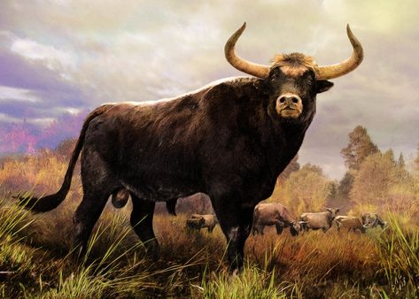

Información
Nombre científico
Bos primigenius primigenius
Extinción en Murcia
Siglo I a.C.
Altura
1.50 - 1.60 m en la cruz
Peso
700 - 1000 kg
Descripción
Fue una especie de mamífero artiodáctilo de la familia Bovidae que constituye los ancestros salvajes de las vacas y toros domésticos (Bos taurus) y los cebúes (Bos indicus), hoy considerados especies separadas.
Desde tiempos antiguos el ser humano utilizó esta especie por su carne, cuero y leche, primero mediante la caza y más tarde mediante la cría doméstica.